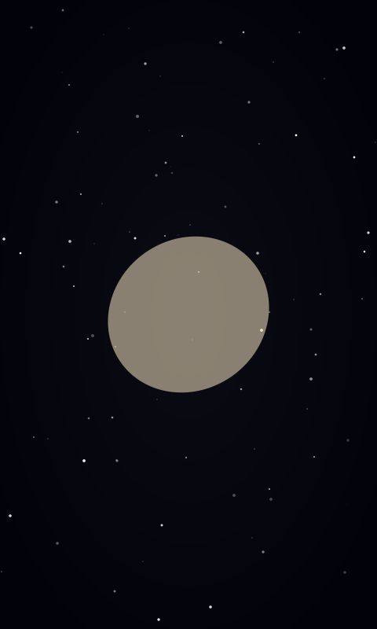

Milestones
My Milestones
Open a milestone to see the summary, reflection and process. Each one changes the season of the page.
Summary
My first astrophotography image: the Triangulum Galaxy (M33), a spiral galaxy about 2.7 million light-years away in the constellation Triangulum.
The goal of this assignment was to capture, process and present a deep-sky object from start to finish.
Reflection
This project taught me the full astrophotography workflow, from choosing a target to stacking and stretching the data. M33 is faint and spread out, so getting the detail to show without amplifying noise was the biggest challenge. Next time I would collect more total exposure time and be more careful with background gradients.
Design process / progress
- Choose the target: I planned which deep-sky object to photograph for the milestone and settled on one that suits my equipment.
- Plan around the sky: I checked the forecast, cloud cover and Moon brightness to find a night when the data would not be washed out. It was cloudy and the Moon was bright, so I picked the first clear night to capture.
- Learn better processing: I watched advanced stacking and stretching tutorials so I would have more control over the final image, since most of the result comes from post-processing.
- Capture the data: On the clear night I take as many light frames as I can of the target.
- Stack: In Siril I combine the frames into one image, filtering by quality so a satellite trail or other bad frame doesn't end up in the stack.
- Stretch: I stretch the stacked image to bring out the faint detail, and remove the stars to work on the galaxy itself.
- Edit in Lightroom: I finish with exposure, contrast, highlights, shadows and blacks, then export the final image.
Final high-res export

Summary
Describe what this milestone was about and what you set out to achieve.
Reflection
What went well, what was difficult and what you would do differently next time.
Design process / progress
- Step one: Describe your first step.
- Step two: Describe your second step.
- Step three: Describe your final result.